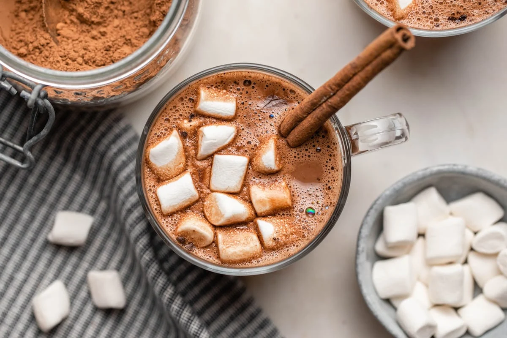

Vegan Hot Chocolate

Description
This recipe makes a smooth and silky vegan hot chocolate. Perfect for a cold winter day when you want to a sweet drink that will warm you up, without having to sit on the toilet all day the day after. This recipe is super simple and can be made with ingrediants you most likley have laying around and all it takes are 5 super simple steps!
Ingredients
1 cup unsweetened oat milk
1 Tbsp unsweetened cocoa powder
1 1/2 Tbsp dairy-free semisweet chocolate (chips or bar // chopped)
Sweetener of choice (I prefer 1 Tbsp raw sugar or 1/2 packet powdered stevia per mug)
1/8 tsp peppermint extract (optional)
Coconut whipped cream (optional // for topping)
Steps
- Add oat milk to a large mug and microwave for 1 minute. Alternatively, add to a saucepan over medium heat.
- Once milk is warm, add cocoa powder, chocolate and sweetener and whisk to combine
- Put back in microwave or continue cooking on stovetop until completely combined and has reached your preferred temperature.
- Taste and adjust sweetness as needed.
- Lastly, add in your extract of choice. I think peppermint is truly unbeatable. Stir, and top with coconut whipped cream.
Other Recipes
Sugar Cookies
Scrambled Eggs